Bruker’s (Legacy) Ultima Investigator¶
The microscope this repository has been developed for is theoretically capable of interacting with any multi-photon microscope from the Bruker Corporation since each scope relies upon the Prairie View software and API. However, it only has been tested while using a legacy Ultima Investigator. It was purchased by the Tye Lab when the system was first entering its commercial phase around 2016. Given its age, there are things unique to our scope involving both the scope’s hardware and software.
This page documents these aspects and also provides notes about the microscope’s use as well.
Prairie View Configuration¶
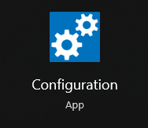Prairie View has a configuration utility that lets you set many different parameters related to the hardware running the system. These settings include, among many:
Laser Settings (i.e. pockels, beam path, shutter path)
PMT Settings
Microscope Axis Controller (X/Y/Z plane motion)
Z-Focus Devices
These settings should not be changed by the user of the system without the explicit confirmation of senior Team2P members and a representative from Bruker’s support team.
You can find this tool by going to your Windows search bar and typing Configuration into the box. The OS will find the shortcut for you.
If for some reason the tool doesn’t come up in the search bar, navigate to this directory on your computer:
C:\ProgramData\Bruker Fluorescence Microscopy\Prairie View\5.6.64.200\ConfigurationBe sure to substitute your currently operating version of Prairie View into the path, the 5.6.64.200 part
Here is what that page looks like:
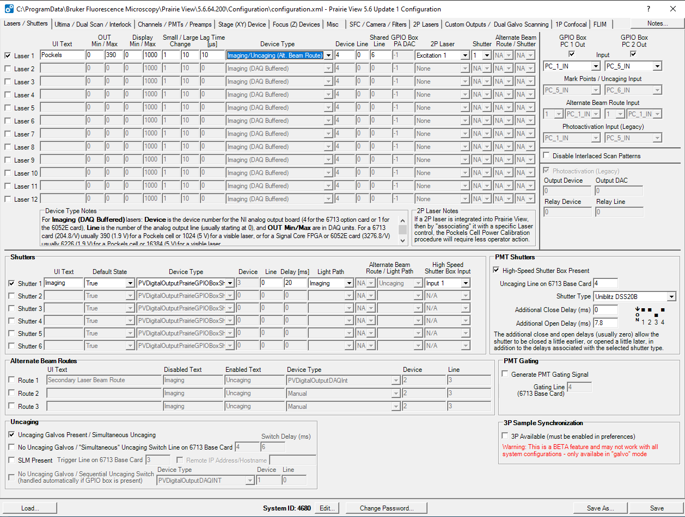Tye Lab Specific Configuration Settings¶
The lab’s microscope settings had to be customized some to enable the use of whole-field LED stimulation for optogenetic manipulation experiments. In order to use this feature, Prairie View had to be tricked into thinking it has the ability to perform point stimulations via spiral galvo operations. Point stimulations refer to the use of a stimulation laser that will stimulate one point in the field of view for your experiment. Typically, this point is a specific cell or list of cells an experimenter wants to manipulate during imaging. Our scope doesn’t have this ability as it’s missing both the spiral galvos themselves as well as the stimulation laser necessary to perform these functions. However, in order to trigger stimulations through the Voltage Output command in Prairie View, Prarie View must think that this hardware is present. This trickery is done by changing two settings in the Lasers/Shutters tab of the Configuration App as well as performing a calibration for the non-existent uncaging galvo ability.
Laser Settings¶
Originally, the laser settings for our scope looked like this:
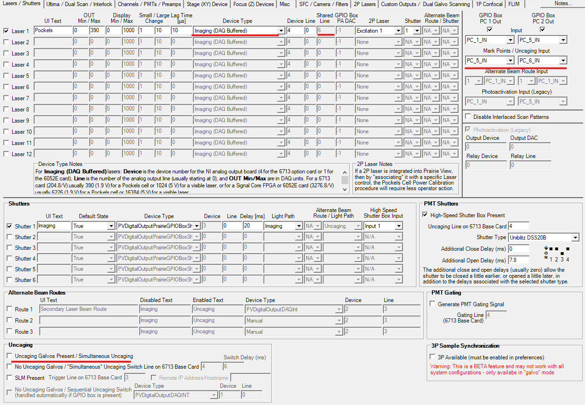You’ll notice that:
The
Device Typefield showsImaging (DAQ Buffered)The
Shared Linefield cannot be toggledThe
Mark Points/Uncaginginput boxes can be toggled (strangely)The first option in
Uncagingsettings statingUncaging Galvos Present / Simulatneous Uncagingis not checked
The trick is to change the Device Type field and the Uncaging Galvos Present / Simultaneous Uncaging setting as shown below.
Notice that:
The
Device Typefield showsImaging/Uncaging (Alt. Beam Route)The
Shared Linefield can be toggled. Don’t change the number there.The
Mark Points/Uncagainginput boxes cannot be toggled (strangely)The first option in
Uncagingsettings statingUncaging Galvos Present / Simultaneous Uncagingis checked
Miscellaneous Settings¶
There’s a tab in the Configuration App called Miscellaneous that contains various configuration values.
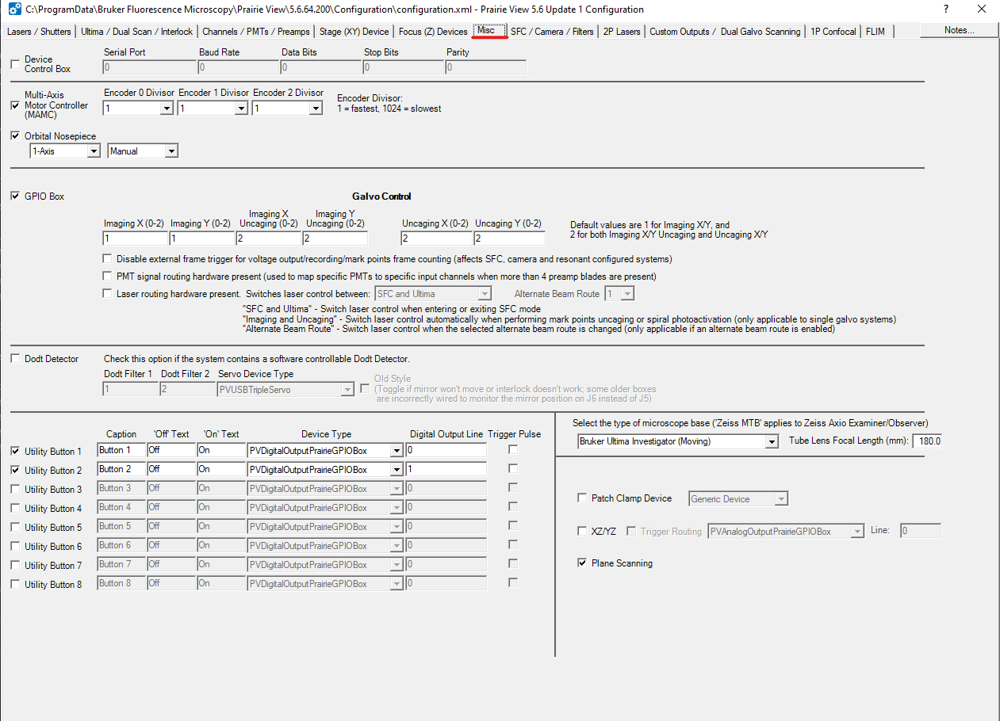During a recent visit from Bruker’s technical team, they changed one setting related to the microscope base field.
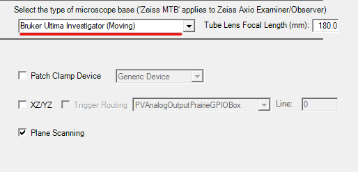It was not noted what the setting was when they checked this, but the Select the type of microscope base now
states Bruker Ultima Investigator (Moving).
Uncaging Galvo Calibration¶
Within the Prairie View software, there is another trick related to calibrating uncaged galvos. Note again that this scope does not have this ability and we do this purely to enable whole-field LED stimulation through Voltage Outputs.
These settings can be found by going to the Tools tab in the main Prairie View window and selecting the
Calibration/Alignment option.
Here is what finding that selection looks like:
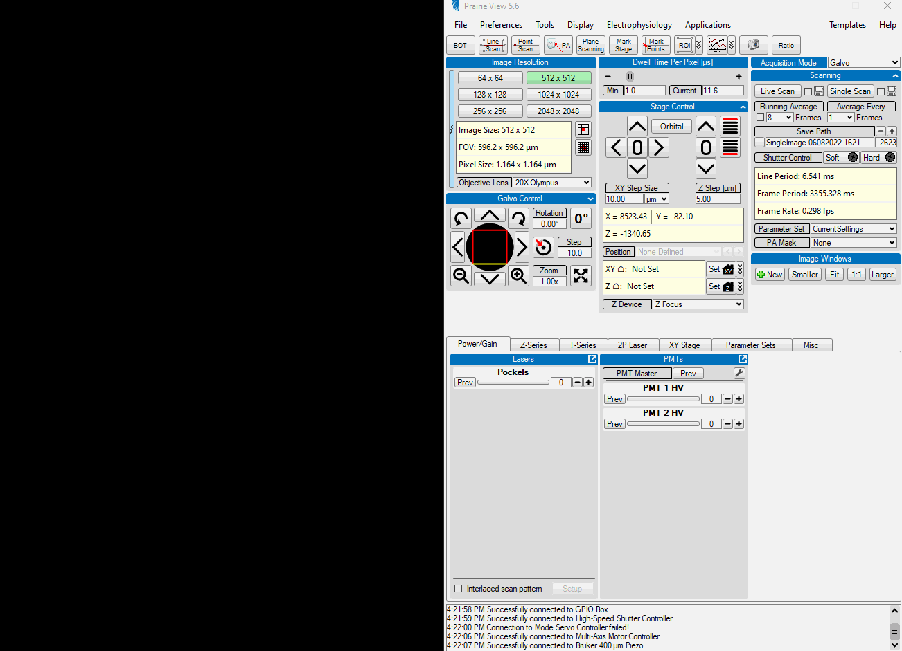Given that this is all trickery, it doesn’t matter which of the calibration modes you select. You can choose the
Burn Spots option. Don’t worry, you won’t be actually burning anything.
When you click the Next button, you can simply continue clicking Next until you are met with the Finish
button. Now that things are “calibrated”, performing whole-field LED stimulations is possible. Documentation for
setting up Voltage Output settings to use this feature is forthcoming.
Prairie View Scan Settings¶
There are several Scan Settings that can be configured within the Prairie View software related to how the system acquires images.
These settings can be found by going to the Tools tab and selecting the Scan Settings option.
You’ll notice that when this window first opens, all the selections are greyed out and inaccessible to change. This is because these are sensitive settings for running the microscope that most users do not need to access. If you’re not careful, you could accidentally damage the hardware!
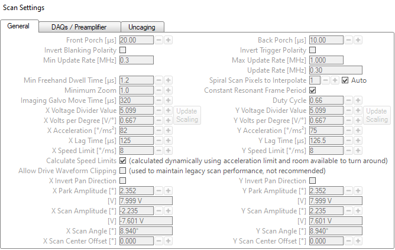However, in our case as users of a legacy system, we need to ensure the software is using specific settings.
To access these parameters, double right-click your mouse on the tab. The settings will all become accessible.
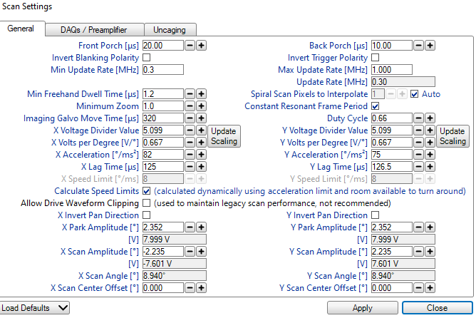First, it is vital to note that this window updates according to which type of scanning is being performed. The
Scan Settings window itself does NOT tell you which settings are being observed/updated. You must use the
Acquisition Mode window for knowing which settings you are observing.
In the General tab of Scan Settings, there’s a button on the bottom left corner of the window labeled
Load Defaults.
When you click this button, a drop down menu will be presented containing different Bruker Microscopy platforms
such as the 2Pplus, Investigator+, and others. Given our scope’s age, the settings we use are found in the Legacy
window. Select the Ultima/Investigator (Divide/5) option.
This setting relates to timing how the galvos in move while scanning your field of view. If the setting is incorrect, the images you collect will be strangely stretched and your field of view incomplete! Examples of this behavior are below.
Galvo-Galvo Mode¶
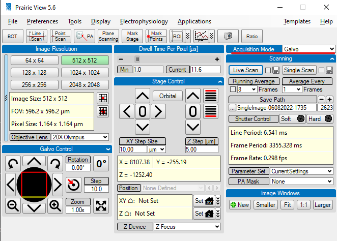The Galvo-Galvo mode of image acquisition has parameters that look like this:
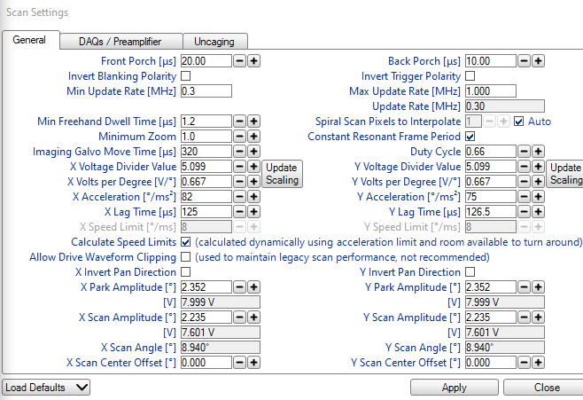Note that in this mode, the Voltage Divider Values for the X and Y axes are the same.
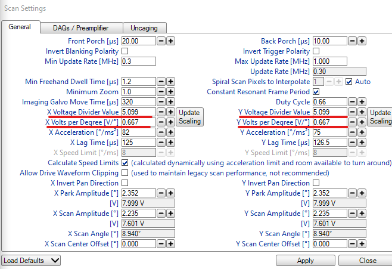Here’s an example image of a pollen grain imaged with the correct settings:
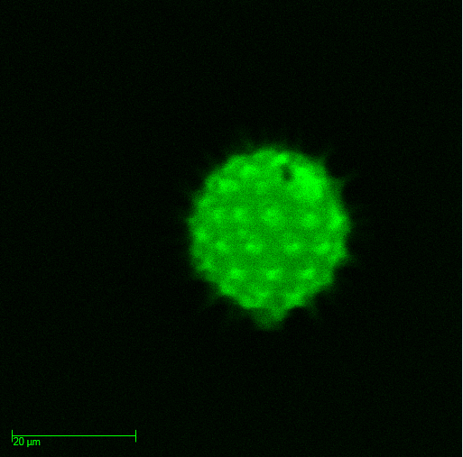If these are different values, you will notice that your images are stretched apart in odd ways!
Here’s an example of incorrect settings:
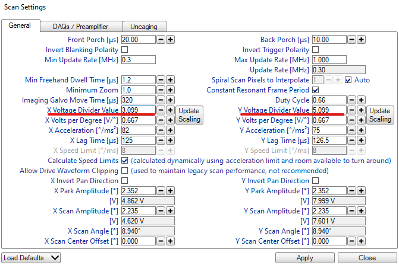Here is an example of what a stretched image looks like:
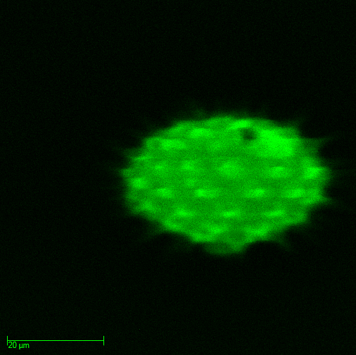This behavior was occuring for an unknown amount of time before the Bruker representatives corrected it for us. The consequence of this configuration error is not only a corrupted image, but also any other calibrations you might perform such as the calculation of a point spread function, or PSF, will be inaccurate too! If one didn’t notice this error, it would be easy to think there was an issue somewhere else in the system such as the optical path.
An additional setting should be checked to ensure that the galvos are scanning in the correct directions. The
relevant setting is called the X Scan Amplitude. If this setting isn’t consistent between scanning modes,
you will see the positions of objects in the field of view switch sides when going between Galvo-Galvo and
Resonant Galvo!
Here is an example of the flipped amplitude on the left from Galvo-Galvo settings to comared to the correct amplitude on the right from the Resonant Galvo settings.
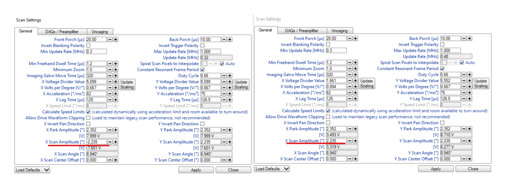Here’s an example of what that behavior looks like:

And here’s what the correct settings look like:

Notice that the position and size of the pollen grains is the same between scan modes!
This behavior was occuring for an unknown amount of time before the Bruker representatives corrected it for us. The consequence of this error include that any comparisons between your z-stack/Galvo imaging will be misaligned. In some analysis softwares, such as Suite2p, users have the option of providing a z-stack for performing correction of z-drift in your imaging session. How to do this is described here.
Resonant Galvo Mode¶
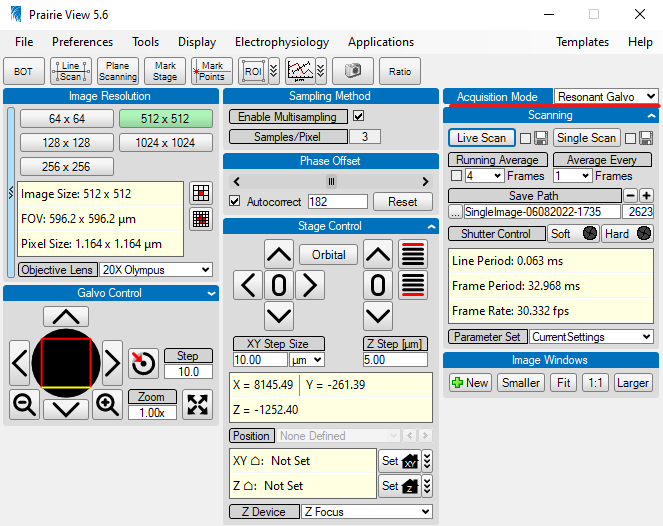The Resonant Galvo mode of image acquisition has parameters that look like this:
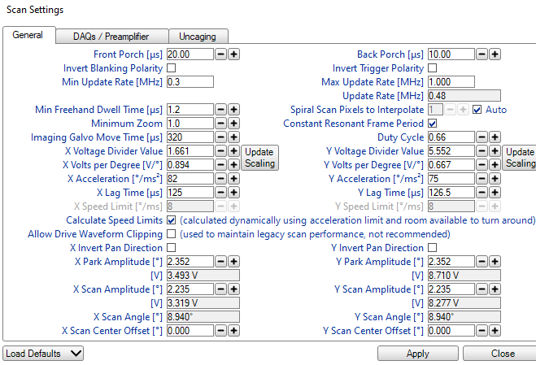The slow axis during scanning is in the Y axis whereas the fast axis for scanning is the X axis. These speeds
are reflected in the X Voltage Divider Value and X Acceleration parameters.
There’s an additional setting that needs mentioning here related to the PMT pre-amplifier offset. The particulars of what this offset actually does are still unknown and need specific clarification from Bruker’s technical team. If these settings are not correct, your imaging session will suffer from artifacts that are generated by electrical noise from the pre-amplifier. This, in combination with PMT “ripple noise”, unequal sampling of the FOV by the DAQ due to nonlinear speads of the resonant galvo, and detector shot noise can cumulatively add significant amounts of noise to your recordings. For a discussion of these artifacts as well as attempts to compensate for them, see this Image.sc forum post.
Thus far, it has been found that removing the artifacts through the subtraction of an average dark image is insufficient to help with motion correction of an average signal to noise recording. It has yet to be tested on a low signal to noise recording.
The relevant settings for these artifacts can be found in the DAQs / Preamplifier tab. The settings shown next
are problematic ones:
Preamplifier Artifacts¶
In order to illustrate these problems best, be sure to use the Range Check color table in the Image window.
You’ll notice that when the Range Check setting is selected in the gif above that the entirety of the image
turns blue. In this color mapping, pixel values of 0 are blue while pixel values at the max of the applied
Look Up Table (or LUT) are red. The full range of values possible in this system are 0 through 65535 (the
max value of an unsigned 16bit integer that the scope samples at). In this above example, the PMTs and lasers
were off so there was no possible signal for the DAQ to sample from. However, when the preamplifiers are on,
there is still some small amount of electrical noise present. If you select the Auto button on the LUT, it
will place the limits of the LUT around the signal that’s present.

If your settings aren’t corrected and you perform averaging of your data at any point, you will have this in your data!
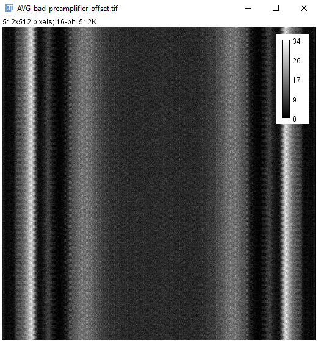Despite the artifact’s magnitude being small, it’s relative strength to low signal to noise recordings is approximately 20% which is significant.
Dark Image with Artifact¶
If you collect a Dark Image, where the PMTs are on but there is no or minimal light present in the room, without correcting this setting, you will see this:

An individual image of this artifact, while varying between images somewhat, essentially looks like this:
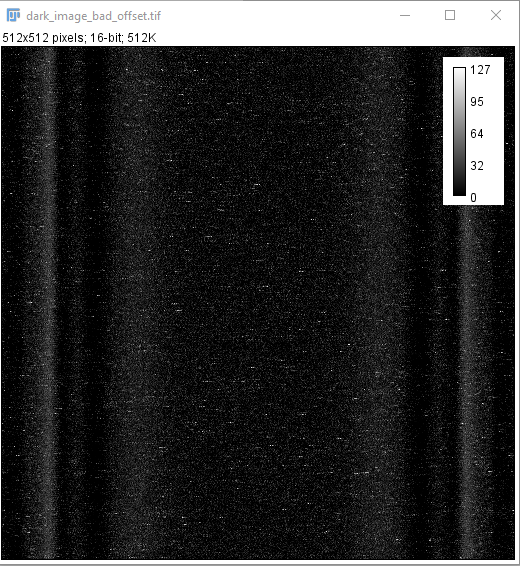An average of this looks similar to the average of the preamplifier alone:
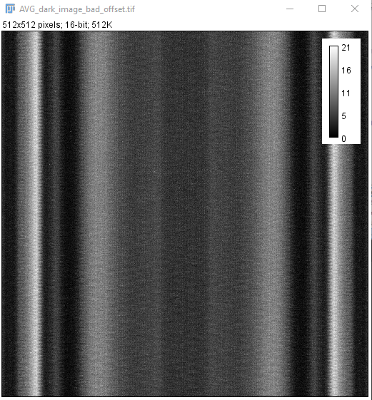When you take an example recording with some pollen grains, you can see the lines present somewhat.
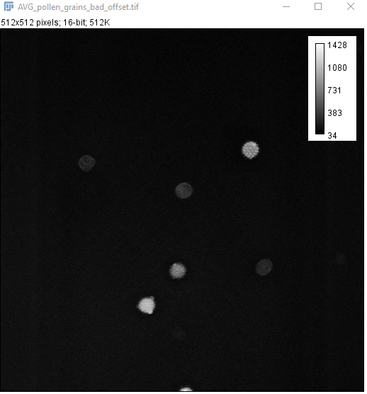The link above to the Image.sc forum illustrates them much better. It appears to be more severe when looking down a GRIN lens in the brain.
Correcting for the Artifact¶
The way this artifact is mitigated is by changing the offset for the PMT that’s being imaged. Bruker’s technical team discovered that adjusting the value creates a much more uniform and lower magnitude noise. A consequence of lowering this offset value is that the true signal we’re interested in will also be somewhat dimmer. However, given that the structures we’re imaging have quite bright fluorescence, a small decrease in the signal of a cell is well worth the dramatic reduction in noise.
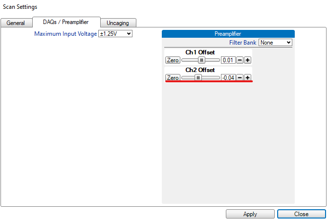Here is what it looks like in real time to change this offset value:

Dark Image Without Artifact¶
Here is an example of what the corrected settings produce while collecting a dark image:
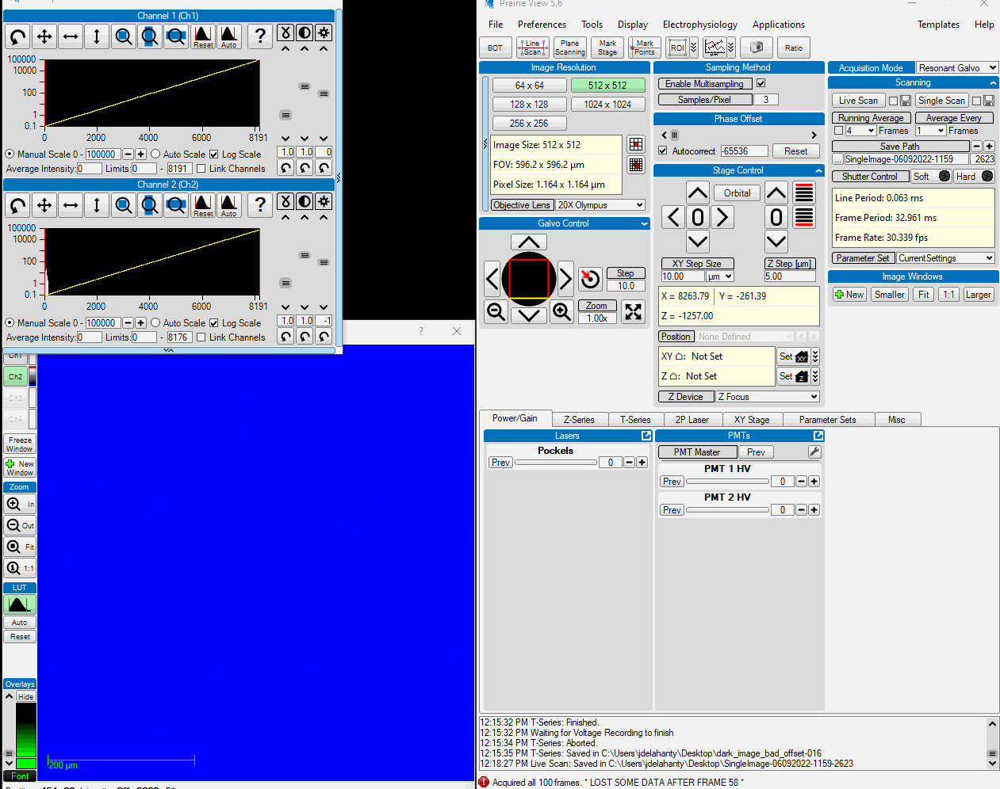You can see that the noise is much more uniform across the entire FOV and is not suffering from the vertical striping pattern as much.
Here is what an individual image of the preamplfier noise with the corrected offset looks like:
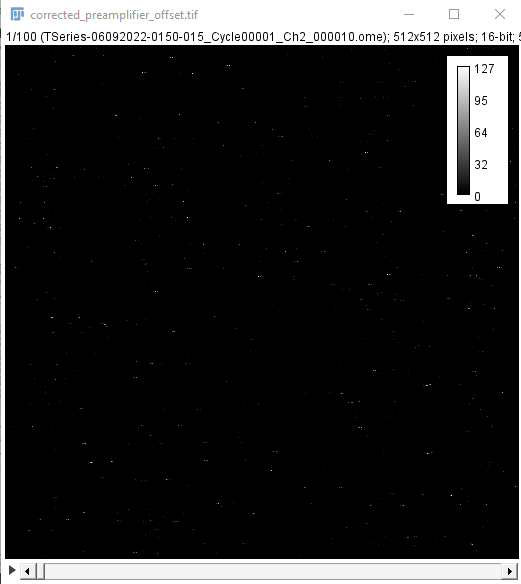An average of the preamplifier noise alone illustrates how much less noise is present:
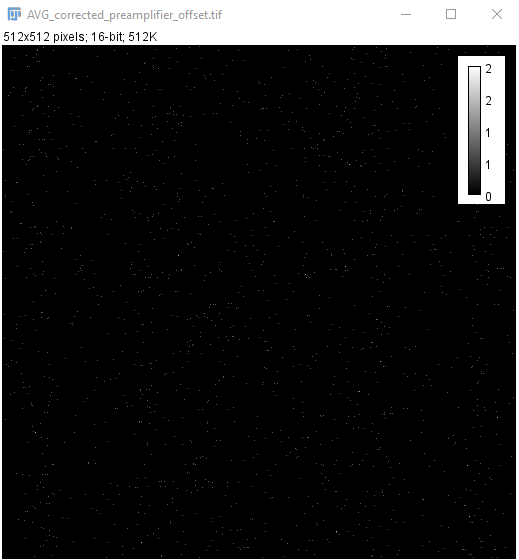This is further exemplified by the average dark image collected with this offset:
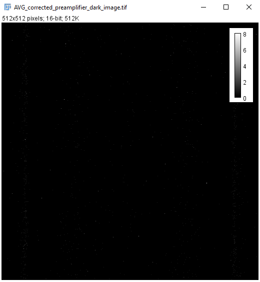Finally, when imaging an example pollen grain, you can see that the veritcal striping is no longer as prominent. However, do note that there is still a form of vertical bars seen on the edges of the FOV. This is due to the nonlinear speed of the resonant galvo and unequal sampling of the DAQ receiving data from the PMTs.

The average images of pollen grains with these settings are also more free of artifacts, although the differences are not as prominent as one would hope:
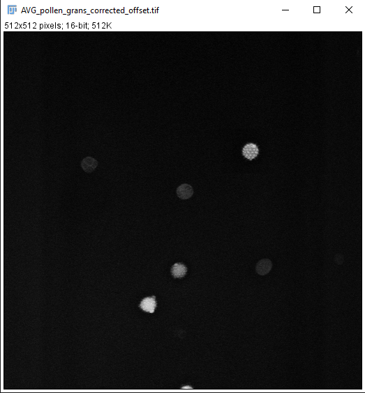It remains to be tested whether or not the benefits seen when looking at these pollen grains will be recreated while looking down a GRIN lens into the brain.
Prairie View Maintenance Settings¶
This tab has the very useful feature of allowing you to override the safety shutter for the multi-photon laser. This is necessary when performing alignment procedures, documentation of which is forthcoming. Note that it will be uncommon to interact with these settings. If you need to, you should confirm with a senior member of Team2P and a represenative from Bruker for what you plan on doing.
It can be found by mousing over the Tools tab on the very bottom of the drop down window.
You will be greeted by a new window with settings related to galvo positioning, PMT shutter overrides, and imaging shutter overrides.
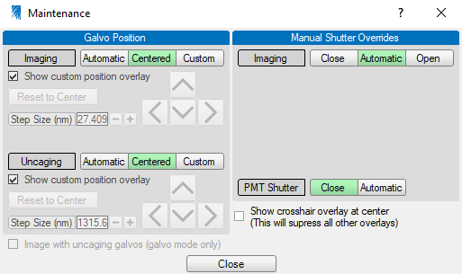During normal operation, there is a safety feature that magnets along the frame of the box must be in contact
with magnets on the doors for the laser’s hard shutter to open. If you need to align the laser, you will have
to have the doors to the microscope’s housing open. Selecting the Open button in the maintenance tab
allows you to override this safety feature and keep the hard shutter to the laser open.